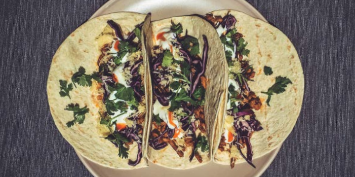

Beef tacos

Description
There are so many varieties of tacos and it is difficult to distinguish between the best, the usual and the extraordinary. The variety between the styles and the quality of the most representative tacos in Mexico is wide.
Recipe originally created by Let's Cook.
Ingredients
- Ground beef
- Wheat tortillas
- Spice mix
- Greek yoghurt
- Cheddar cheese
- Red cabbage
- Tomato sauce
- Sriracha
- Coriander
Step by step instructions
- Prepare the ingredients:
Cut red cabbage into thin slices.
Grate cheddar cheese.
Chop cilantro.
- The beef:
Heat oil in a frying pan and fry the meat a few minutes until it gets some color.
Add spices and stir well.
Add tomato sauce and cook 1 more minute.
- Make your tacos:
Heat the tortillas a little in the microwave.
Serve your tacos using the tortilla as a base, then add meat and top with red cabbage, cheddar cheese, Greek yoghurt, sriracha, and cilantro.
Go to homepage